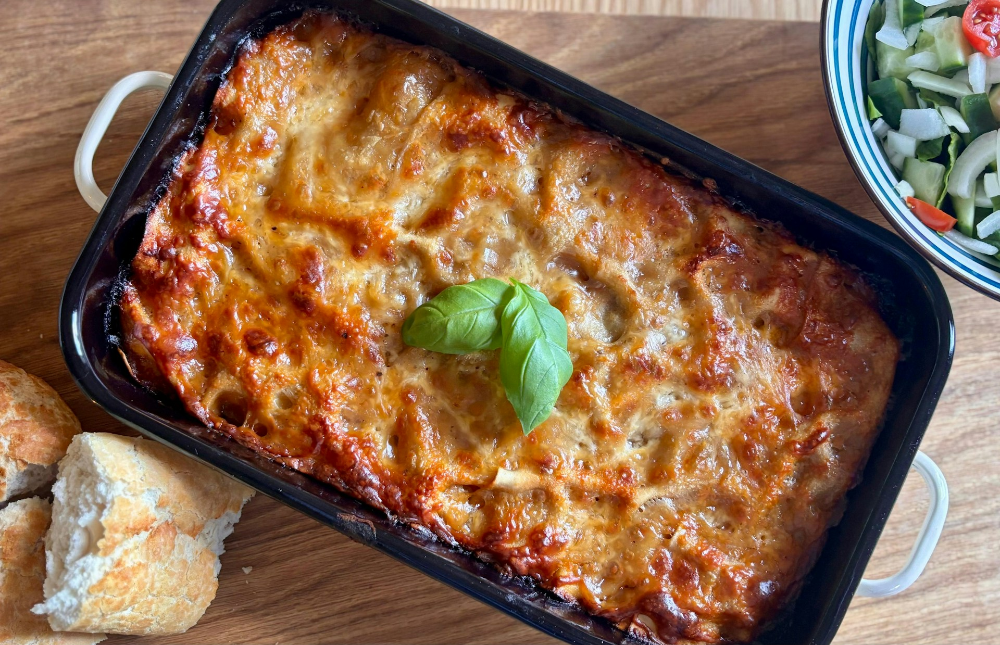

Home
Lasagna

Lasagna is a classic Italian baked dish built around layers of flat pasta, seasoned meat with onion and garlic, tangy tomato sauce, and melted cheese. Even Garfield would get out of bed for this one.
Ingredients
- Meat
- Pasta
- Tomato sauce
- Cheese
- Onion
- Garlic
Steps
- Cook the pasta until just al dente, then drain.
- Cook the meat in a pan.
- Add onion and garlic and cook until softened.
- Stir in the tomato sauce and simmer for 10-15 minutes.
- Layer the pasta, meat sauce, and cheese in a baking dish. Repeat the layers.
- Finish with cheese on top.
- Bake at 190°C for 35-45 minutes.
- Let the lasagna rest for 10-15 minutes before serving.